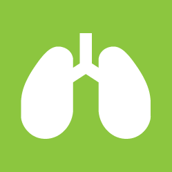

東京都台東区上野0丁目 0 - 0
診療内容
当院では、地域の皆様の健康を支えるため、幅広い内科診療を行っております。日常的な体調管理から、各種の検査や治療に至るまで、どんなお悩みもお気軽にご相談ください。
成しましたが、現在のWebトレンドや技術進化には対応していません。見た目が古く、特にスマートフォンやタブレットからの閲覧が難しい状態です。リニューアルの目的は以下の通りです。
1. 一般内科診療
風邪や発熱、喉の痛み、頭痛、腹痛などの症状を中心に、一般的な体調不良の診療を行っています。また、原因不明の不調や軽い症状であっても、早期診断に努めております。
風邪や発熱、喉の痛み、頭痛、腹痛などの症状を中心に、一般的な体調不良の診療を行っています。また、原因不明の不調や軽い症状であっても、早期診断に努めております。
2. 生活習慣病の診断・治療
高血圧症、糖尿病、脂質異常症（高コレステロール血症）、メタボリック症候群など、生活習慣病の診断と治療を行います。病気の進行を予防し、健康維持のための生活指導や薬物療法を行います。
高血圧症、糖尿病、脂質異常症（高コレステロール血症）、メタボリック症候群など、生活習慣病の診断と治療を行います。病気の進行を予防し、健康維持のための生活指導や薬物療法を行います。
3. 消化器系の診察
胃痛、胃もたれ、胸やけ、便秘、下痢などの消化器系の不調に対応しています。必要に応じて胃カメラや超音波検査などを実施し、胃腸の健康をサポートします。
胃痛、胃もたれ、胸やけ、便秘、下痢などの消化器系の不調に対応しています。必要に応じて胃カメラや超音波検査などを実施し、胃腸の健康をサポートします。

4. 呼吸器系の診察
咳、息切れ、胸の痛みなど、呼吸器系の症状について診察を行っています。季節性の喘息やアレルギー性鼻炎、慢性閉塞性肺疾患（COPD）などにも対応し、適切な治療と予防をサポートします。
咳、息切れ、胸の痛みなど、呼吸器系の症状について診察を行っています。季節性の喘息やアレルギー性鼻炎、慢性閉塞性肺疾患（COPD）などにも対応し、適切な治療と予防をサポートします。
5. 健康診断・各種検査
定期健康診断をはじめ、血液検査、尿検査、心電図、超音波検査、レントゲン検査などを行い、病気の早期発見と予防に努めます。異常が見つかった場合は、経過観察や専門治療へとつなげてまいります。
定期健康診断をはじめ、血液検査、尿検査、心電図、超音波検査、レントゲン検査などを行い、病気の早期発見と予防に努めます。異常が見つかった場合は、経過観察や専門治療へとつなげてまいります。
6. 予防接種
インフルエンザや肺炎球菌などの各種予防接種を行っています。定期的な接種で感染予防と体調管理を支援いたします。予防接種は予約制となりますので、事前にお問い合わせください。
インフルエンザや肺炎球菌などの各種予防接種を行っています。定期的な接種で感染予防と体調管理を支援いたします。予防接種は予約制となりますので、事前にお問い合わせください。
7. 禁煙外来
禁煙をご希望の方に、禁煙治療とサポートを行っています。必要に応じて、ニコチン依存症の治療薬を使用し、無理なく禁煙が継続できるようお手伝いいたします。
禁煙をご希望の方に、禁煙治療とサポートを行っています。必要に応じて、ニコチン依存症の治療薬を使用し、無理なく禁煙が継続できるようお手伝いいたします。
地域の皆様に安心してご来院いただけるよう、私たちスタッフ一同、誠心誠意対応いたします。それぞれの専門性と温かさを活かし、皆様の健康を支えるパートナーとしてお力になれるよう努めてまいります。
院長：佐藤 太郎
歴：
光明大学医学部卒業後、瑞穂中央総合病院で内科医として10年間勤務。その後、地域医療への貢献を目指し、佐藤内科医院を開院。
専門分野： 生活習慣病、呼吸器疾患、内科全般
メッセージ： 患者様にとって気軽に相談できる「かかりつけ医」を目指しています。どんな小さな不安でも、まずはご相談ください。
専門分野： 生活習慣病、呼吸器疾患、内科全般
メッセージ： 患者様にとって気軽に相談できる「かかりつけ医」を目指しています。どんな小さな不安でも、まずはご相談ください。
看護師長：鈴木 真理
経歴：
白桜大学看護学部卒業後、緑が丘大学病院で10年勤務。地域医療に携わりたい思いから、佐藤内科医院に入職。
得意分野： 患者様への親身な対応、注射・採血技術、健康管理指導
メッセージ： 安心して治療を受けていただけるよう、いつも笑顔でお待ちしています。些細なことでもお気軽にご相談ください。
得意分野： 患者様への親身な対応、注射・採血技術、健康管理指導
メッセージ： 安心して治療を受けていただけるよう、いつも笑顔でお待ちしています。些細なことでもお気軽にご相談ください。
事務長：田中 和彦
経歴：
明邦医療専門学院卒業後、光寿記念病院などで医療事務を経験。現在は佐藤内科医院で事務長を務める。
得意分野： 予約・受付対応、医療保険手続き、スムーズな会計管理
メッセージ： 皆様がスムーズに診療を受けられるよう、受付や手続きのサポートに力を入れています。わかりやすい説明を心がけていますので、気になる点があればお気軽にお尋ねください。
得意分野： 予約・受付対応、医療保険手続き、スムーズな会計管理
メッセージ： 皆様がスムーズに診療を受けられるよう、受付や手続きのサポートに力を入れています。わかりやすい説明を心がけていますので、気になる点があればお気軽にお尋ねください。
臨床検査技師：高橋 由美
経歴：
東都臨床検査技術専門学校を卒業後、武蔵中央医療センターにて15年間の臨床検査技師としての経験を積む。
得意分野： 血液検査、心電図検査、超音波検査
メッセージ： メッセージ： 検査は不安が伴うこともありますが、できるだけリラックスしていただけるよう、優しく丁寧な対応を心がけています。
得意分野： 血液検査、心電図検査、超音波検査
メッセージ： メッセージ： 検査は不安が伴うこともありますが、できるだけリラックスしていただけるよう、優しく丁寧な対応を心がけています。
医療事務：山本 花
経歴：
希望医療カレッジ卒業後、さくら診療所にて受付業務を担当。現在は佐藤内科医院で患者様対応を担当。
得意分野： 受付業務、カルテ管理、医療費計算
メッセージ： メッセージ： メッセージ： 皆様に気持ちよくご利用いただけるよう、笑顔と真心を大切にしております。初めての方もどうぞ安心してお越しください。
得意分野： 受付業務、カルテ管理、医療費計算
メッセージ： メッセージ： メッセージ： 皆様に気持ちよくご利用いただけるよう、笑顔と真心を大切にしております。初めての方もどうぞ安心してお越しください。